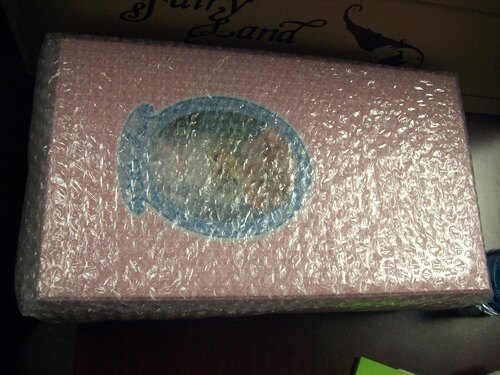

Another case of event hype. She's cute but she's more of my mom's type than my own.
I believe I was very interested in getting a Minifee at the time, but didn't fall in love with any of the heads. Honestly, I never did fall in love with a Minifee head...
The fullset mohair wig is absolute crap. Awful! The outfit does have real fur on it! This is by far the best engineered doll I own. Fairyland truly does have that advantage over everyone else.